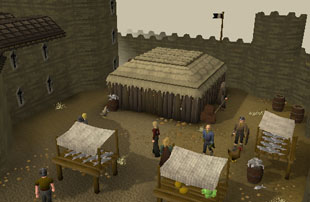
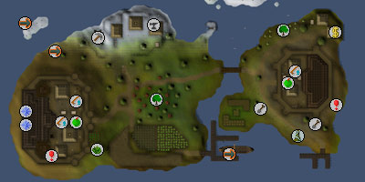
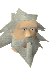

Miscellania and Etceteria (Members)
Introduction | Location | Points of Interest | Personalities
Quests | Miscellania's Marauders | Miscellaneous
Quests | Miscellania's Marauders | Miscellaneous
Introduction

Hundreds of years later, the two sides are still at odds, although their people have learnt to make best use of the frugal topsoil. Feeding on nutrient-heavy resources like fish and potatoes, maintaining their maple tree forests and chipping from the northern lodes of coal, the Miscellanians and Etceterians have learnt to help one another to survive, even if their kingdoms stand bitterly at war.
Location

To the east, over a wide expanse of sea and the frozen wastes, lies the icy ranges north of the Troll Stronghold.
Vast seas stretch out to the north and west. But only Lunar Isle is known to be there.
Points of Interest

Primarily fishing towns, Miscellania and Etceteria have comprehensive stocks. Visit the fishmonger in either town and you will find a menu that includes some delights of the sea, while also providing the gamut of tools. Though they may argue over who is the superior, both fishmongers have an impressive array.
Gardening connoisseurs will find a spirit tree patch in the south-east of Etceteria, eastward of Farmer Fromund's temperamental garden.
Space has become limited in Miscellania, so perhaps the unexplored dungeons will have to be opened up?
Personalities
|

Good-natured, adventurous, and always looking for an opportunity to 'muck in' with his subjects, King Vargas has qualities befitting a successful monarch. His flaming temper hampers this, but the largest obstacle to his rule has recently been his looks. Suddenly transformed into a creature eight feet tall and covered in fur, King Vargas is, unquestionably, a yeti. Accepting that his rule cannot continue in such a state, he is on the look-out for a regent to continue his good work.
|
Gossip around Etceteria claims that the Queen is envious of King Vargas's army, and this alone explains the enmity between the two of them. Close inspection soon reveals that something deeper lies behind the feud, something that King Vargas's children are keen to address. Sigrid herself seems to enjoy the verbal crossing-of-swords with Vargas, as it brings a splash of colour to the drab life that she finds herself in.
|
|
| King Vargas fills most of the space of his throne room in Miscellania Palace. | Queen Sigrid rules alone in her palace in Etceteria. |
|
Prince Brand is an aspiring bard, and will be so for some time. With a turn of phrase that would turn a white wolf green, Brand's poetry is frankly terrible. Nevertheless, King Vargas is on the lookout for a bride for his self-absorbed son, who cannot help but be more interested in himself, poetry, sagas and the lilting strum of the harp.
|
In a choice between Brand and the beautiful Astrid, Vargas would take little time in picking the successor to his throne. Astrid is not trusted to be sole ruler, however, and Vargas would prefer someone reliable standing at her side. This may be down to her consuming hobbies of archery and bow collecting, her love of jewellery or her relentless chatter.
|
|
| Prince Brand rarely leaves the room next to his father's throneroom. | Princess Astrid resides in the northern wing of the palace, next to the throneroom. |

Long-suffering right-hand-man to the King, Ghrim is the calming influence to Vargas's overwhelming enthusiasm. Miscellanian legend says that Ghrim, at some point in the cobwebbed past, smiled. That time is long gone, though, and Ghrim chooses instead to be industrious, knowledgeable and sarcastic. |
| Ghrim rarely leaves King Vargas's side. |
Miscellania's Marauders
There are no serious threats to those visiting Miscellania or Etceteria's mainland.
Quests
The following quests can be started at Miscellania and Etcetera:
- Throne of Miscellania (Members)
- Royal Trouble (Members)
Miscellaneous Miscellania
- Want to take a load off? Visit north-east Miscellania for a chilled evening ranging penguins. A guaranteed ice breaker.
- Although the majority of Miscellania and Etceteria's produce is required for simple subsistence, potatoes, wheat and cabbages can be taken from the farmland on southern Miscellania.
- Advisor Ghrim should be your first port of call after completing Miscellania's two quests. He is next to King Vargas in Miscellania Palace, and is an invaluable guide to Miscellania's intricacies.
- There is a bank in the north-east of Etceteria. This is convenient for storing away produce gained from Advisor Ghrim after the Royal Trouble quest.
- Visit the Managing Miscellania page for explanations and strategies for the Miscellania upkeep and reward system.

More articles in
Cities and Towns
|
|